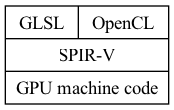
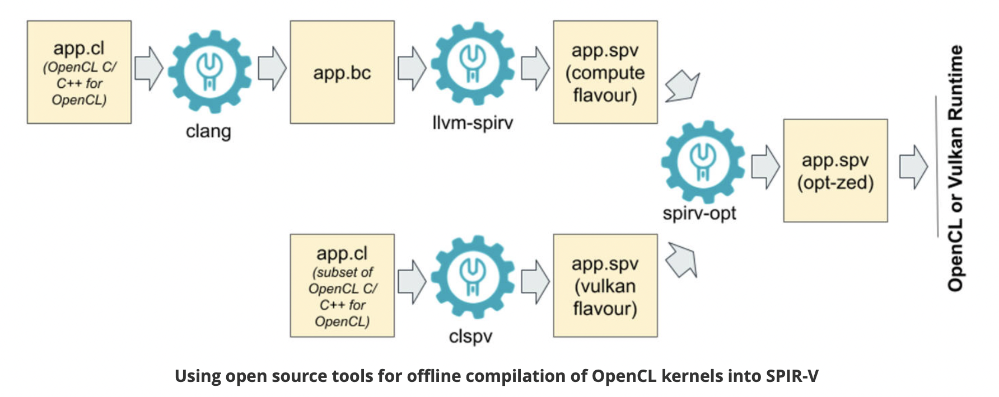
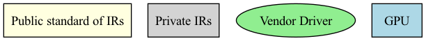
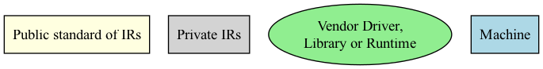
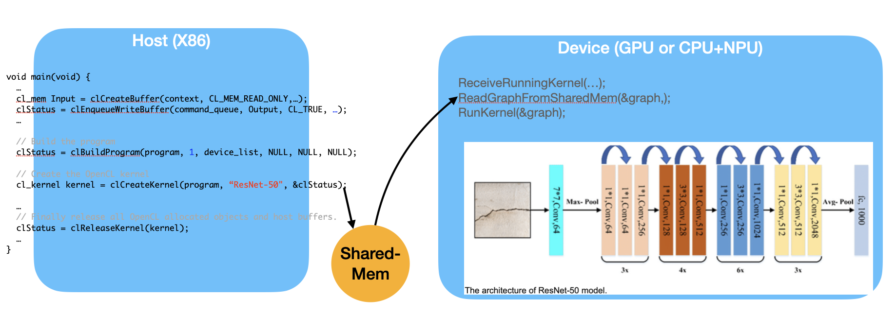
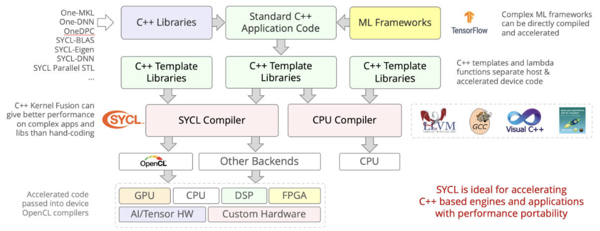

. _software-struct:
Software Structure¶
As the previous section illustrated, GPU is a SIMT (SIMD) for data parallel application. This section introduces the GPU evolved from Graphics GPU to the General purpose GPU (GPGPU) and the software architecture of GPUs and explores AI software frameworks designed for GPUs, NPUs, and CPUs.
Vector Processor¶
As described in the Computer Architecture: A Quantitative Approach book, the vector processor VMIPS introduces the Vector Length Register (VLR) and Vector Mask (VM) to support SIMD execution. The Vector Mask functions similarly to conditional instructions in CPUs. In vector processors, VM acts as a form of conditional execution mechanism.
✅ Vector-Length Registers: Handling Loops Not Equal to 64
for (i=0; i <n; i=i+1)
Y[i] = a * X[i] + Y[i];
As above code, the value of n is not known at compile time.
Solution:
Compiler converts loop into multiple iterations of loops, where each iteration processes up to the maximum vector length maximum vector length (MVL) as shown as below. For VMIPS, the MVL is 64.
low = 0;
VL = (n % MVL); /*find odd-size piece using modulo op % */
for (j = 0; j <= (n/MVL); j=j+1) { /*outer loop*/
for (i = low; i < (low+VL); i=i+1) /*runs for length VL*/
Y[i] = a * X[i] + Y[i] ; /*main operation*/
low = low + VL; /*start of next vector*/
VL = MVL; /*reset the length to maximum vector length*/
}
The inner loop of the preceding code is vectorizable with length VL, which is equal to either (n % MVL) or MVL. The VLR register must be set twice in the code, once at each place where the variable VL in the code is assigned.
✅ Vector Mask Registers: Handling IF Statements in Vector Loops
for (i = 0; i < 64; i=i+1)
if (X[i] != 0)
X[i] = X[i] – Y[i];
For the VMIPS vector processor, the above code can be implemented using the Vector Length Register (VLR) as shown below.
Assembly code of Vector Processor (from page 276 of Quantitative)
LV V1,Rx ;load vector X into V1
LV V2,Ry ;load vector Y
L.D F0,#0 ;load FP zero into F0
SNEVS.D V1,F0 ;sets VM(i) to 1 if V1(i)!=F0
SUBVV.D V1,V1,V2 ;subtract under vector mask
SV V1,Rx ;store the result in X
Code reference here [3].
General purpose GPU¶
Since GLSL shaders provide a general way for writing C code in them, if applying a software frame work instead of OpenGL API, then the system can run some data parallel computation on GPU for speeding up and even get CPU and GPU executing simultaneously. Furthmore, any language that allows the code running on the CPU to poll a GPU shader for return values, can create a GPGPU framework [1].
Mapping data in GPU¶
As described in the previous section on GPUs, the subset of the array calculation y[] = a * x[] + y[].
// Invoke DAXPY with 256 threads per Thread Block
__host__
int nblocks = (n+255) / 256;
daxpy<<<nblocks, 256>>>(2.0, x, y);
// DAXPY in CUDA
__device__
void daxpy(double a, double *x, double *y) {
int i = blockIdx.x*blockDim.x + threadIdx.x;
a*x[i] + y[i];
}
name<<<dimGrid, dimBlock>>>(… parameter list …):
dimGrid: Number of Blocks in Grid
dimBlock: 256 Threads in Block
Assembly code of PTX (from page 300 of Quantitative book)
// The following sequence of PTX instructions is for one iteration of the
// DAXPY loop above.
shl.u32 R8, blockIdx, 9 ; Thread Block ID * Block size (512)
add.u32 R8, R8, threadIdx ; R8 = i = my CUDA Thread ID
shl.u32 R8, R8, 3 ; byte offset
ld.global.f64 RD0, [X+R8] ; RD0 = X[i]
ld.global.f64 RD2, [Y+R8] ; RD2 = Y[i]
mul.f64 RD0, RD0, RD4 ; Product in RD0 = RD0 * RD4 (scalar a)
add.f64 RD0, RD0, RD2 ; SuminRD0 = RD0 + RD2 (Y[i])
st.global.f64 [Y+R8], RD0 ; Y[i] = sum (X[i]*a + Y[i])
✅ Conditional Branching in GPUs [4]:
Assembly code of PTX (from refering page 302 of Quantitative book)
__device__
void lane-mask-ex( double *X, double *Y, double *Z) {
if (X[i] != 0)
X[i] = X[i] – Y[i];
else X[i] = Z[i];
}
Code from here [5].
The following two instructions illustrate conditional (predicated) instruction execution on GPUs.
predicate = cond // predicate is the mask register
@predicate instruction
This IF statement could compile to the following PTX instructions (assuming that R8 already has the scaled thread ID), with *Push, *Comp, *Pop indicating the branch synchronization markers inserted by the PTX assembler that push the old mask, complement the current mask, and pop to restore the old mask:
Assembly code of PTX (from refering page 302 of Quantitative book)
ld.global.f64 RD0, [X+R9] ; RD0 = X[i]
setp.neq.s32 P1, RD0, #0 ; P1 is predicate register 1
@!P1, bra ELSE1, *Push ; Push old mask, set new mask bits
; if P1 false, go to ELSE1
ld.global.f64 RD2, [Y+R8] ; RD2 = Y[i]
sub.f64 RD0, RD0, RD2 ; Difference in RD0
st.global.f64 [X+R8], RD0 ; X[i]=RD0
ELSE1:
ld.global.f64 RD0, [Z+R8] ; RD0 = Z[i]
st.global.f64 [X+R8], RD0 ; X[i] = RD0
ENDIF1:
ret, *Pop ; pop to restore old mask
The PTX:
setp.neq.s32 P1, RD0, #0
On actual NVIDIA hardware (SASS), the instruction typically becomes:
ISETP.NE.AND P1, PT, R0, RZ, PT ; PT is always-true predicate
This instruction compares the 32-bit signed integer value in register
RD0 with the constant 0. The result of the comparison is written
to the predicate register P1.
Semantics:
P1 = (RD0 != 0)
Each thread (lane) in the warp evaluates this comparison independently.
Example (8-thread warp):
RD0 values: [5, 3, 0, 7, 1, 0, 4, 2]
P1 result: [1, 1, 0, 1, 1, 0, 1, 1]
This instruction does not modify the active thread mask. It only produces a predicate value that will be used by later predicated instructions or branches.
@!P1 bra ELSE1, *Push
This is a predicated branch instruction.
The prefix @!P1 means the instruction executes only for threads where
the predicate P1 is false.
Semantics:
if (!P1)
branch to ELSE1
If all threads agree on the predicate value, the warp simply branches or
falls through. However, if some threads have P1 = 1 and others have
P1 = 0, control flow divergence occurs.
Mask Stack Operation
The *Push modifier indicates that the hardware must update the SIMT
control-flow stack.
When divergence occurs:
The current active mask is pushed onto the stack.
The warp execution mask is split into two masks:
mask_then= active_mask & P1mask_else= active_mask & !P1
Execution proceeds with one mask while the other path is saved for later execution.
Conceptual behavior:
push(active_mask)
mask_then = active_mask & P1
mask_else = active_mask & !P1
execute THEN block using mask_then
later execute ELSE block using mask_else
Threads in the THEN mask execute the fall-through path, while threads in the ELSE mask branch to
ELSE1.
5. Keep in mind, however, that the only choice for a SIMD Lane in a clock cycle is to perform the operation specified in the PTX instruction or be idle; two SIMD Lanes cannot simultaneously execute different instructions [4].
The following table explains how the elements of saxpy() are mapped to the Lanes of a SIMD Thread (Warp), which belongs to a Thread Block (Core) within a Grid.
saxpy(() |
Instance in Fig. 68 |
Description |
|---|---|---|
blockDim.x |
The index of Thread Block |
blockDim: in this example configured as Fig. 68 is 16(Thread Blocks) * 16(SIDM Threads) = 256 |
blockIdx.x |
The index of SIMD Thread |
blockIdx: the index of Thread Block within the Grid |
threadIdx.x |
The index of elements |
threadIdx: the index of the SIMD Thread within its Thread Block |
With Fermi, each 32-wide thread of SIMD instructions is mapped to 16 physical SIMD Lanes, so each SIMD instruction in a thread of SIMD instructions takes two clock cycles to complete.
You could say that it has 16 Lanes, the vector length would be 32, and the Chime is 2 clock cycles.
The mape of y[0..31] = a * x[0..31] * y[0..31] to <Core, Warp, Cuda Thread> of GPU as the following table. x[0..31] map to 32 Cuda Threads; two Cuda Threads map to one SIMD Lane as Fig. 67..
Warp-0 |
Warp-1 |
… |
Warp-15 |
|
|---|---|---|---|---|
Core-0 |
y[0..31] = a * x[0..31] * y[0..31] |
y[32..63] = a * x[32..63] + y[32..63] |
… |
y[480..511] = a * x[480..511] + y[480..511] |
… |
… |
… |
… |
… |
Core-15 |
y[7680..7711] = a * … |
… |
… |
y[8160..8191] = a * x[8160..8191] + y[8160..8191] |
Each Cuda Thread runs the GPU function code saxpy. Fermi has a register file of size 32768 x 32-bit. As shown in Fig. 59, the number of registers in a Thread Block is: 16 (SM) * 32 (Cuda Threads) * 64 (TLR, Thread Level Register) = 32768 x 32-bit (Register file).
When mapping to fragments/pixels in a graphics GPU, x[0..15] corresponds to a two-dimensional tile of fragments/pixels at pixel[0..3][0..3], since images use tile-based grouping to cluster similar colors together.
Work between CPU and GPU in Cuda¶
The previous daxpy() GPU code did not include the host (CPU) side code that triggers the GPU function.
The following example shows the host (CPU) side of a CUDA program that calls saxpy on the GPU [2]:
#include <stdio.h>
__global__
void saxpy(int n, float a, float * x, float * y)
{
int i = blockIdx.x*blockDim.x + threadIdx.x;
if (i < n) y[i] = a*x[i] + y[i];
}
int main(void)
{
...
cudaMemcpy(d_x, x, N*sizeof(float), cudaMemcpyHostToDevice);
cudaMemcpy(d_y, y, N*sizeof(float), cudaMemcpyHostToDevice);
...
saxpy<<<(N+255)/256, 256>>>(N, 2.0, d_x, d_y);
...
cudaMemcpy(y, d_y, N*sizeof(float), cudaMemcpyDeviceToHost);
...
}
The main() function runs on the CPU, while saxpy() runs on the GPU. The CPU copies data from x and y to the corresponding device arrays d_x and d_y using cudaMemcpy.
The saxpy kernel is launched with the following statement:
saxpy<<<(N+255)/256, 256>>>(N, 2.0, d_x, d_y);
This launches the kernel with Thread Blocks containing 256 threads, and uses integer arithmetic to determine the number of Thread Blocks needed to process all N elements in the arrays. The expression (N+255)/256 ensures full coverage of the input data.
Using cudaMemcpyHostToDevice and cudaMemcpyDeviceToHost, the CPU can pass data in x and y to the GPU, and retrieve the results back to y.
Since both memory transfers are handled by DMA and do not require CPU operation, the performance can be improved by running CPU and GPU independently, each accessing their own cache.
After the DMA copy from CPU memory to GPU memory, the GPU performs the full matrix operation loop for y[] = a * x[] + y[]; using a single Grid of threads.
DMA memcpy maps the data in CPU memory to each L1 cache of a core on GPU memory.
Many GPUs support scatter and gather operations to access DRAM efficiently for stream processing tasks [6] [1] [7].
When the GPU function is dense computation in array such as MPEG4 encoder or deep learning for tuning weights, it may get much speed up [8]. However when GPU function is matrix addition and CPU will idle for waiting GPU’s result. It may slow down than doing matrix addition by CPU only. Arithmetic intensity is defined as the number of operations performed per word of memory transferred. It is important for GPGPU applications to have high arithmetic intensity else the memory access latency will limit computational speedup [1].
Wiki here [9] includes GPU-accelerated applications for speedup as follows:
General Purpose Computing on GPU, has found its way into fields as diverse as machine learning, oil exploration, scientific image processing, linear algebra, statistics, 3D reconstruction and even stock options pricing determination. In addition, section “GPU accelerated video decoding and encoding” for video compressing [9] gives the more applications for GPU acceleration.
Item |
CPU |
GPU |
|---|---|---|
Application |
Non-data parallel |
Data parallel |
Architecture |
SISD, small vector (eg.4*32bits) |
Large SIMD (eg.16*32bits) |
Cache |
Smaller and faster |
Larger and slower (ref. The following Note) |
ILP |
Pipeline |
Pipeline |
Superscalar, SMT |
SIMT |
|
Super-pipeline |
||
Core |
Smaller threads for SMT (2 or 4) |
Larger threads (16 or 32) |
Branch |
Conditional-instructions |
Mask & conditional-instructions |
Note
GPU-Cache
In theory, for data-parallel applications using GPU’s SMT, the GPU can schedule more threads and aims for throughput rather than speedup of a single thread, as seen in SISD on CPUs.
However, in practice, GPUs provide only a small L1 cache, similar to CPUs, and handle cache misses by scheduling another thread.
As a result, GPUs often lack L2 and L3 caches, which are common in CPUs with deeper cache hierarchies.
OpenCL, Vulkan and Spir-v¶

Fig. 86 OpenCL and GLSL(OpenGL)¶
Name of SW |
GPU language |
Level of GPU language |
|---|---|---|
OpenCL |
OpenCL |
C99 dialect (with C pointer, …) |
OpenGL |
GLSL |
C-like (no C pointer, …) |
Vulkan |
SPIR-V |
IR |
{kind=link}

Fig. 87 Offline Compilation of OpenCL Kernels into SPIR-V Using Open Source Tooling [11]¶
clang: Compile OpenCL to spirv for runtime+driver. Or compile OpenCL to llvm, then “SPIR-V LLVM Translator” translate llvm to spirv for runtime+driver.
clspv: Compile OpenCL to spirv directly.
![digraph ShaderToLLVMIR {
rankdir=LR;
node [shape=record, style=filled, color=black];
// Source Languages
GLSL [label="GLSL ES (OpenGL)", fillcolor=white];
OpenCL_C [label="OpenCL C", fillcolor=white];
// Intermediate Representation
SPIRV [label="SPIR-V", fillcolor=orange];
GPU_ISA [label="GPU ISA in Assembly and Binary", fillcolor=grey];
// LLVM IR
LLVM_IR [label="LLVM IR", fillcolor=orange];
// Tools with oval shapes
node [shape=oval, style=filled, fillcolor=lightgreen];
Glslang [label="glslangValidator", fillcolor=lightblue];
CL_SPIRV [label="OpenCL-SPIRV Translator"];
// Tools with oval shapes
node [shape=oval, style=filled, fillcolor=yellow];
SPIRV_LLVM [label="SPIRV-LLVM Translator"];
LLVMCompiler [label="Backend Compiler"];
// Edges
GLSL -> Glslang -> SPIRV;
OpenCL_C -> CL_SPIRV -> SPIRV -> SPIRV_LLVM -> LLVM_IR -> LLVMCompiler -> GPU_ISA;
}](_images/graphviz-99121eaae6a2eb9d1b723e16bb6a49af2b8965c5.png)
Fig. 88 GPU Compiler Components and Flow¶
The flow and relationships among GLSL, OpenCL, SPIR-V (Vulkan/OpenCL), LLVM IR, and the GPU compiler are shown in the Fig. 86, Fig. 87 and Fig. 88. As shown in Fig. 88, OpenCL-C to SPIR-V (OpenCL) can be compiled using clang + llvm-spirv tools or a proprietary converter.
As shown in Fig. 88, both GLSL and OpenCL use frontend tools to generate SPIR-V. The driver can invoke either the GLSL or OpenCL compiler based on metadata fields in the SPIR-V, as illustrated in Fig. 89 and the following figures, which describe offline compilation from GLSL/OpenCL to SPIR-V and online execution using the generated SPIR-V files.
![digraph SPIRV_Deployment {
rankdir=LR;
node [shape=box, style=filled, fillcolor=lightgray, fontname="Helvetica"];
subgraph cluster_glsl {
label = "From GLSL";
glsl_src [label="GLSL Shader\n (.vert/.frag/.comp)", fillcolor=lightblue];
glsl_compiler [label="glslangValidator\n(or similar compiler)", fillcolor=lightgreen];
spirv_glsl [label="SPIR-V\n (from GLSL)", fillcolor=gold];
glsl_src -> glsl_compiler -> spirv_glsl;
}
subgraph cluster_opencl {
label = "From OpenCL C";
opencl_src [label="OpenCL C (.cl)", fillcolor=lightblue];
clang_spirv [label="Clang + SPIR-V Backend", fillcolor=lightgreen];
spirv_opencl [label="SPIR-V\n (from OpenCL C)", fillcolor=gold];
opencl_src -> clang_spirv -> spirv_opencl;
}
subgraph cluster_opencl_runtime {
label = "OpenCL Runtime (Host)";
spirv_loader [label="clCreateProgramWithIL()", fillcolor=orange];
spirv_glsl -> spirv_loader;
spirv_opencl -> spirv_loader;
spirv_loader -> device_driver [label="Load\n SPIR-V\n into driver"];
device_driver [label="OpenCL Driver\n(SPIR-V → Device IR → Machine Code)", fillcolor=plum];
device_driver -> execution [label="Compiled &\n Run on device"];
execution [label="Execute on\n OpenCL Device", fillcolor=lightyellow];
}
// Styling
edge [fontname="Helvetica"];
}](_images/graphviz-5e30390ffbe8fd980ce6af8d87379682f0acd8e5.png)
Fig. 89 Compiling and Deploying GPU Code from GLSL, Vulkan, and OpenCL¶
Based on the flows above, the public standards OpenGL and OpenCL provide tools for transferring these data format, as illustrated in Fig. 90. The corresponding LLVM IR and SPIR-V formats are listed below.
![digraph G {
rankdir=LR;
// Data Nodes
node [shape=record, style=filled, fillcolor=white];
glsl [label="glsl"];
openclc [label="OpenCL C"];
spirv [label="spirv"];
llvm [label="llvm-ir"];
// Tools Nodes
node [shape=oval, style=filled, fillcolor=lightgreen];
glslang [label="glslangValidator"];
spirv_cross [label="spirv-cross"];
clspv [label="clspv"];
llvm_spirv [label="llvm-spirv"];
glsl -> glslang -> spirv;
glsl -> spirv_cross -> spirv [dir="back"];
openclc -> clspv -> spirv;
openclc -> clspv -> spirv [dir="back"];
spirv -> llvm_spirv -> llvm;
llvm -> llvm_spirv -> spirv;
}](_images/graphviz-02980713d6332c30de8d5bd43cf8f5344f5198e8.png)
Fig. 90 Convertion between GLSL, OpenCL C, SPIRV-V and LLVM-IR¶
References/add-matrix.ll
; ModuleID = 'add-matrix.ll'
target datalayout = "e-p:64:64:64-i1:8:8-i8:8:8-i16:16:16-i32:32:32-i64:64:64-f32:32:32-f64:64:64-v16:16:16-v24:32:32-v32:32:32-v48:64:64-v64:64:64-v96:128:128-v128:128:128-v192:256:256-v256:256:256-v512:512:512-v1024:1024:1024-G1"
target triple = "spir64-unknown-unknown"
; Function Attrs: nounwind
define spir_func <4 x i32> @add_mat(<4 x i32> %a, <4 x i32> %b) #0 {
entry:
%sum = add <4 x i32> %a, %b
ret <4 x i32> %sum
}
attributes #0 = { nounwind }
!spirv.MemoryModel = !{!0}
!opencl.enable.FP_CONTRACT = !{}
!spirv.Source = !{!1}
!opencl.spir.version = !{!2}
!opencl.used.extensions = !{!3}
!opencl.used.optional.core.features = !{!3}
!spirv.Generator = !{!4}
!0 = !{i32 2, i32 2}
!1 = !{i32 0, i32 0}
!2 = !{i32 1, i32 2}
!3 = !{}
!4 = !{i16 6, i16 14}
References/add-matrix.spvasm
; SPIR-V
; Version: 1.0
; Generator: Khronos LLVM/SPIR-V Translator; 14
; Bound: 10
; Schema: 0
OpCapability Addresses
OpCapability Linkage
OpCapability Kernel
%1 = OpExtInstImport "OpenCL.std"
OpMemoryModel Physical64 OpenCL
OpSource Unknown 0
OpName %add_mat "add_mat"
OpName %a "a"
OpName %b "b"
OpName %entry "entry"
OpName %sum "sum"
OpDecorate %add_mat LinkageAttributes "add_mat" Export
%uint = OpTypeInt 32 0
%v4uint = OpTypeVector %uint 4
%4 = OpTypeFunction %v4uint %v4uint %v4uint
%add_mat = OpFunction %v4uint None %4
%a = OpFunctionParameter %v4uint
%b = OpFunctionParameter %v4uint
%entry = OpLabel
%sum = OpIAdd %v4uint %a %b
OpReturnValue %sum
OpFunctionEnd
Convert between spirv and llvm-ir
% pwd
$HOME/git/lbd/References
% llvm-as -o add-matrix.bc add-matrix.ll
% llvm-spirv -o add-matrix.spv add-matrix.bc
% spirv-dis -o add-matrix.spvasm add-matrix.spv
// Convert spirv to llvm-ir again and check the converted llvm-ir is same
// with origin.
% llvm-spirv -r add-matrix.spv -o add-matrix.spv.bc
% llvm-dis add-matrix.spv.bc -o add-matrix.spv.bc.ll
% diff add-matrix.ll add-matrix.spv.bc.ll
1c1
< ; ModuleID = 'add-matrix.ll'
---
> ; ModuleID = 'add-matrix.spv.bc'
Install llvm-spriv and llvm with Brew-install
% brew install spirv-llvm-translator
% brew install llvm
The following explains how the driver identifies whether the SPIR-V source is from GLSL or OpenCL.
SPIR-V binaries contain metadata that can help identify whether they were generated from OpenCL, GLSL, or another language.
Execution Model
Defined by the OpEntryPoint instruction. It is a strong indicator of the source language.
ExecutionModel
Typical Source
Notes
Kernel
OpenCL
Used only by OpenCL C
GLCompute
GLSL or HLSL
Used in compute shaders
Fragment
GLSL or HLSL
For pixel shaders
Vertex
GLSL or HLSL
For vertex shaders
Capabilities
Declared using OpCapability. They provide clues about the SPIR-V’s execution model and source.
Capability
Likely Source
Kernel
OpenCL
Addresses
OpenCL
Linkage
OpenCL
Shader
GLSL or HLSL
Extensions
Declared using OpExtension. Some are tied to specific compilers or languages.
Extension
Likely Source
SPV_KHR_no_integer_wrap_decoration
OpenCL
SPV_INTEL_unified_shared_memory
OpenCL (Intel)
SPV_AMD_shader_ballot
GLSL (graphics)
Memory Model
Defined by OpMemoryModel.
OpenCL → OpenCL source
GLSL450 → GLSL or HLSL source
How to Inspect
Use the spirv-dis tool to disassemble SPIR-V to human-readable form:
spirv-dis kernel.spv -o kernel.spvasm
Look for these at the top of the file:
Example (GLSL):
OpCapability Shader OpMemoryModel Logical GLSL450 OpEntryPoint GLCompute %main "main"
Example (OpenCL):
OpCapability Kernel OpCapability Addresses OpMemoryModel Logical OpenCL OpEntryPoint Kernel %foo "foo"
Summary¶
Feature |
Indicates |
|---|---|
OpEntryPoint Kernel |
OpenCL |
OpCapability Shader |
GLSL or HLSL |
OpMemoryModel OpenCL |
OpenCL |
OpMemoryModel GLSL450 |
GLSL or HLSL |
Comparsion for OpenCL and OpenGL’s compute shader.
Same:
Both are for General Computing of GPU.
Difference:
OpenCL include GPU and other accelerate device/processor. OpenCL is C language on Device and C++ on Host based on OpenCL runtime. Compute shader is GLSL shader language run on OpenGL graphic enviroment and integrate and access data of OpenGL API easily [10].
OpenGL/GLSL vs Vulkan/spir-v.
High level of API and shader: OpenGL, GLSL.
Low level of API and shader: Vulkan, spir-v.
Though OpenGL api existed in higher level with many advantages from sections above, sometimes it cannot compete in efficience with direct3D providing lower levels api for operating memory by user program [13]. Vulkan api is lower level’s C/C++ api to fill the gap allowing user program to do these things in OpenGL to compete against Microsoft direct3D. Here is an example [14]. Meanwhile glsl is C-like language. The vulkan infrastructure provides tool, glslangValidator [15], to compile glsl into an Intermediate Representation Form (IR) called spir-v off-line. As a result, it saves part of compilation time from glsl to gpu instructions on-line since spir-v is an IR of level closing to llvm IR [16]. In addition, vulkan api reduces gpu drivers efforts in optimization and code generation [13]. These standards provide user programmer option to using vulkan/spir-v instead of OpenGL/glsl, and allow them pre-compiling glsl into spir-v off-line to saving part of on-line compilation time.
With vulkan and spir-v standard, the gpu can be used in OpenCL for Parallel Programming of Heterogeneous Systems [17] [18]. Similar with Cuda, a OpenCL example for fast Fourier transform (FFT) is here [19]. Once OpenCL grows into a popular standard when more computer languages or framework supporting OpenCL language, GPU will take more jobs from CPU [20].
Most GPUs have 16 or 32 Lanes in a SIMD processor (Warp), vulkan provides Subgroup operations to data parallel programming on Lanes of SIMD processor [21].
Subgroup operations provide a fast way for moving data between Lanes intra Warp. Assuming each Warp has four Lanes. The following table lists result of reduce, inclusive and exclusive operations.
Lane |
0 |
1 |
2 |
3 |
|---|---|---|---|---|
Initial value |
a |
b |
c |
d |
Reduce |
OP(abcd) |
OP(abcd) |
OP(abcd) |
OP(abcd) |
Inclusive |
OP(a) |
OP(ab) |
OP(abc) |
OP(abcd) |
Exclusive |
not define |
OP(a) |
OP(ab) |
OP(abc) |
Reduce: e.g. subgroupAdd. Inclusive: e.g. subgroupInclusiveAdd. Exclusive: e.g. subgroupExclusiveAdd.
For examples:
ADD operation: OP(abcd) = a+b+c+d.
MAX operation: OP(abc) = MAX(a,b,c).
When Lane i is inactive, it is value is none.
For instance of Lane 0 is inactive, then MUL operation: OP(abcd) = b*c*d.
The following is a code example.
An example of subgroup operations in glsl for vulkan
vec4 sum = vec4(0, 0, 0, 0);
if (gl_SubgroupInvocationID < 16u) {
sum += subgroupAdd(in[gl_SubgroupInvocationID]);
}
else {
sum += subgroupInclusiveMul(in[gl_SubgroupInvocationID]);
}
subgroupMemoryBarrier();
Nvidia’s GPU provides __syncWarp() for subgroupMemoryBarrier() or compiler to sync for the Lanes in the same Warp.
In order to let Lanes in the same SIMD processor work efficently, data unifomity analysis will provide many optimization opporturnities in register allocation, transformation and code generation [22].
LLVM IR expansion from CPU to GPU is becoming increasingly influential. In fact, LLVM IR has been expanding steadily from version 3.1 until now, as I have observed.
Unified IR Conversion Flows¶
This section outlines the intermediate representation (IR) flows for graphics (Microsoft DirectX, OpenGL) and OpenCL compilation across major GPU vendors: NVIDIA, AMD, ARM, Imagination Technologies, and Apple.
Graphics Compilation Flow (Microsoft DirectX & OpenGL)¶
Graphics shaders are compiled from high-level languages (HLSL, GLSL) into vendor-specific GPU binaries via intermediate representations like DXIL and SPIR-V.
✅ Each node in the graph is color-coded to indicate its category or role within the structure.

Vendor Driver will call Vendor Compiler for on-line compilation.
![digraph OpenCL_OpenGL_Compilation {
rankdir=LR;
node [shape=box];
// Source Languages
OpenCL_C [style=filled, fillcolor=lightyellow];
GLSL [style=filled, fillcolor=lightyellow];
// Shared IRs
SPIR [style=filled, fillcolor=lightyellow];
SPIRV [label="SPIR-V IR", style=filled, fillcolor=lightyellow];
LLVM_IR [style=filled, fillcolor=lightyellow];
// Vendor Drivers
node [shape=oval];
"NVIDIA Driver" [style=filled, fillcolor=lightgreen];
"AMD Driver" [style=filled, fillcolor=lightgreen];
"ARM Driver" [style=filled, fillcolor=lightgreen];
"Imagination Driver" [style=filled, fillcolor=lightgreen];
"Apple Driver" [style=filled, fillcolor=lightgreen];
// Private IRs
node [shape=box];
"PTX IR" [style=filled, fillcolor=gray];
"GCN IR" [style=filled, fillcolor=gray];
"Burst IR" [style=filled, fillcolor=gray];
"Metal IR" [style=filled, fillcolor=gray];
// GPU Targets
"NVIDIA GPU ISA" [style=filled, fillcolor=lightblue];
"AMD GPU ISA" [style=filled, fillcolor=lightblue];
"ARM Mali ISA" [style=filled, fillcolor=lightblue];
"Imagination USC ISA" [style=filled, fillcolor=lightblue];
"Apple GPU ISA" [style=filled, fillcolor=lightblue];
// OpenCL Flow
OpenCL_C -> SPIR -> LLVM_IR;
OpenCL_C -> SPIRV;
// OpenGL Flow
GLSL -> SPIRV -> LLVM_IR;
// LLVM based Compilation Flow
LLVM_IR -> "PTX IR" -> "NVIDIA Driver" -> "NVIDIA GPU ISA";
LLVM_IR -> "GCN IR" -> "AMD Driver" -> "AMD GPU ISA";
LLVM_IR -> "ARM Driver" -> "ARM Mali ISA";
LLVM_IR -> "Burst IR" -> "Imagination Driver" -> "Imagination USC ISA";
LLVM_IR -> "Metal IR" -> "Apple Driver" -> "Apple GPU ISA";
}](_images/graphviz-239718c68c5ac9e9ad10711d65ad2f74e9cc33c8.png)
Fig. 91 Graphics and OpenCL Compiler IR Conversion Flow¶
OpenCL C is the device side code in C language while Host side code is C/C++.
OpenCL C is compiled to SPIR-V in later versions of OpenCL, while earlier versions used SPIR. SPIR-V has now largely replaced SPIR as the standard intermediate representation.
IR Layer |
Abstraction Level |
Register Model |
|---|---|---|
PTX (NVIDIA) |
Virtual ISA; portable across GPU generations; hides hardware scheduling |
Virtual registers (%r, %f); mapped to physical registers during SASS lowering |
GCN IR (AMD) |
Machine IR; tightly coupled to GCN/RDNA architecture; exposes Wavefront semantics |
Explicit vector (vN) and scalar (sN) registers; register pressure affects occupancy. AMD’s compiler backend can lower vector operations to scalar instructions on low-end GPUs, while preserving vector operations on high-end architectures. |
Burst IR (Imagination) |
Power-aware IR; optimized for burst-core scheduling and latency hiding |
Operand staging model; abstracted register usage; mapped late to USC ISA |
Metal IR (Apple) |
LLVM-inspired IR; abstracted from developers; tuned for tile shading and threadgroup fusion |
Region-based register allocation; dynamic renaming; not exposed as physical register model |
✅ NVIDIA, AMD, ARM and Imagination all have exposed LLVM IR and convert SPIR-V IR to LLVM IR.
SPIR:
For OpenCL development, the IR started from SPIR (LLVM-based IR).
SPIRV’s Limitation: tightly coupled to specific LLVM versions, making it brittle across.
SPIR-V:
A complete redesign: binary format, not tied to LLVM.
Designed for Vulkan, but also supports OpenCL and OpenGL.
Enables cross-vendor portability, shader reflection, and custom extensions.
Used in graphics and compute pipelines, including ML workloads via Vulkan compute.
A Vulkan shader written in GLSL is compiled to SPIR-V, then passed to the GPU driver.
An OpenCL kernel written in C can be compiled to SPIR-V, then lowered to LLVM IR internally by vendors like AMD or NVIDIA.
⚠️ Apple
Uses LLVM IR Partially. Apple supports SPIR-V in Metal and OpenCL, but LLVM IR is not always exposed.
Metal shaders are compiled via MetalIR, which is LLVM-inspired but not standard LLVM IR. Metal IR is not standard LLVM IR and is not exposed to developers.
Apple’s ML compiler stack may use LLVM IR internally, but it’s abstracted from developers.
Apple is not a vendor of GPU IP, so it does not expose LLVM IR in its ML or graphics APIs for the reasons below:
Security: opaque compilation prevents tampering
Performance tuning: Apple controls the entire stack for optimal hardware use
Developer simplicity: high-level APIs reduce friction
Notes:
HLSL → DXIL → DirectX is Microsoft’s graphics pipeline, used on Windows and Xbox.
GLSL → SPIR-V → OpenGL/Vulkan is cross-platform and supported by all vendors.
Final GPU ISA varies by vendor:
NVIDIA: PTX → SASS
AMD: LLVM IR → GCN/RDNA
ARM: Mali ISA
Imagination: USC ISA
Apple: Metal GPU ISA
Notes:
OpenCL C → SPIR → Vendor Driver → GPU ISA is the standard compilation path.
Some vendors (e.g., AMD, NVIDIA) may bypass SPIR and compile directly to LLVM IR or PTX.
Apple deprecated OpenCL in favor of Metal, but legacy support remains.
✅ References
OpenCL Specification: https://www.khronos.org/opencl/
SPIR-V Specification: https://www.khronos.org/spir
DirectX Shader Compiler: https://github.com/microsoft/DirectXShaderCompiler
Imagination E-Series GPU: https://www.imaginationtech.com/
Apple Metal API: https://developer.apple.com/metal/
ML and GPU Compilation¶
This section outlines the intermediate representation (IR) flows used by NVIDIA, AMD, and ARM in machine learning and GPU compilation pipelines. It includes both inference engines and compiler toolchains.
✅ Each node in the graph is color-coded to indicate its category or role within the structure. In AI, usually use runtime instead of driver for graphics.

NVIDIA IR Conversion Flow¶
NVIDIA supports both TensorRT-based inference and MLIR-based compilation targeting CUDA GPUs is shown as Fig. 92.
![digraph NVIDIA_IR_Flow {
rankdir=LR;
node [shape=box];
ONNX [style=filled, fillcolor=lightyellow];
"TensorRT Graph IR" [style=filled, fillcolor=lightgray];
"CUDA Kernel IR" [style=filled, fillcolor=lightgray];
PTX [style=filled, fillcolor=lightyellow];
SASS [label="SASS (NVIDIA GPU ISA)", style=filled, fillcolor=lightblue];
TensorRT [style=filled, shape=oval, fillcolor=lightgreen];
TOSA [style=filled, fillcolor=lightyellow];
"MLIR GPU Dialects" [style=filled, fillcolor=lightyellow];
"LLVM IR" [style=filled, fillcolor=lightyellow];
ONNX -> "TensorRT Graph IR" -> "CUDA Kernel IR" -> PTX;
"TensorRT Graph IR" -> TensorRT;
TOSA -> "MLIR GPU Dialects" -> "LLVM IR" -> PTX -> SASS;
}](_images/graphviz-9e7ea0b93900fccdd807f79e4b8f2bb6c23fc030.png)
Fig. 92 NVIDIA IR Conversion Flow¶
SASS stands for Streaming ASSembler, and it represents the native instruction set architecture (ISA) for NVIDIA GPUs.
TensorRT is a C++ library and runtime developed by NVIDIA for deep learning inference—the phase where trained models make predictions.
CUDA Kernel IR is a bridge between LLVM IR and PTX/SASS, or a direct output from TensorRT.
LLVM IR is foundational in many flows, but TensorRT may skip it and directly emit CUDA kernels.
Although MLIR dialects may be publicly available, they are typically hardware-dependent and tailored to specific vendors’ GPU architectures. As a result, their applicability is limited to the corresponding hardware platforms.
MLIR GPU Dialects is public but it is for Nvidia’s GPU.
AMD IR Conversion Flow¶
AMD uses ROCm and MIOpen for ML workloads, with LLVM-based compilation targeting GCN or RDNA architectures is shown as Fig. 93.
![digraph ROCm_Runtime_PyTorch_MIOpen_PreMLIR_Flow {
rankdir=LR;
node [shape=box];
// Entry points
PyTorch_Model [label="PyTorch Model", style=filled, fillcolor=lightyellow];
ONNX_Model [label="ONNX Model", style=filled, fillcolor=lightyellow];
MLIR_TOSA [label="MLIR (TOSA dialect)", style=filled, fillcolor=lightyellow];
// Pre-MLIR optimization
MIOpen_PreMLIR [label="MIOpen Graph IR (Pre-MLIR)", style=filled, fillcolor=gray];
// Compilation layers
ONNX_MLIR [label="ONNX-MLIR", style=filled, fillcolor=lightyellow];
MLIR_GPU [label="MLIR GPU dialect", style=filled, fillcolor=lightyellow];
LLVM_IR [style=filled, fillcolor=lightyellow];
ROCm_BC [label="ROCm device libraries (.bc)", shape=oval, style=filled, fillcolor=lightgreen];
GCN_IR [style=filled, fillcolor=gray];
// Post-GCN optimization
MIOpen_IR [label="MIOpen Graph IR (Post-GCN)", style=filled, fillcolor=gray];
// Runtime layers
ROCr_Runtime [label="ROCr Runtime", shape=oval, style=filled, fillcolor=lightgreen];
// GPU Targets
GPU [label="AMD GPU ISA", style=filled, fillcolor=lightblue];
// Flow paths
PyTorch_Model -> ONNX_Model;
ONNX_Model -> MIOpen_PreMLIR -> ONNX_MLIR -> LLVM_IR;
MLIR_TOSA -> MLIR_GPU -> LLVM_IR;
LLVM_IR -> ROCm_BC;
LLVM_IR -> GCN_IR;
GCN_IR -> MIOpen_IR -> ROCr_Runtime -> GPU;
// === Layering for better spacing ===
{ rank = same; MIOpen_PreMLIR; ONNX_MLIR }
{ rank = same; GCN_IR; MIOpen_IR }
}](_images/graphviz-036275b186c4ea21ff8e302d4331db91d1ac2246.png)
Fig. 93 AMD IR Conversion Flow¶
ROCm is not just a compiler or driver — it includes a full runtime stack that enables AMD GPUs to execute compute workloads across HIP (Heterogeneous-compute Interface for Portability), OpenCL, and ML frameworks. It’s analogous to NVIDIA’s CUDA runtime but built around open standards like HSA (Heterogeneous System Architecture) [25] and LLVM.
MIOpen Graph IR includes different form and structure. (Pre-MLIR) and (Post-GCN) are different.
Developers interact with MIOpen via high-level APIs (e.g., miopenConvolutionForward) — not via direct IR manipulation.
While MIOpen itself is open source (GitHub repo), its graph IR format and transformation passes are internal.
ARM IR Conversion Flow¶
ARM supports both CPU/NPU deployment (e.g., Ethos-U/N) and GPU execution (e.g., Mali via Vulkan). The IR flow diverges depending on the target is shown as Fig. 94.
![digraph ARM_IR_Flow {
rankdir=LR;
node [shape=box];
"ONNX / TFLite" [style=filled, fillcolor=lightyellow];
TOSA [style=filled, fillcolor=lightyellow];
"MLIR Dialects" [style=filled, fillcolor=lightgray];
"LLVM IR" [style=filled, fillcolor=lightyellow];
"ARM Codegen" [style=filled, shape=oval, fillcolor=white];
"Ethos-N / Cortex-M" [style=filled, fillcolor=lightblue];
"MLIR GPU Dialects" [style=filled, fillcolor=lightgray];
SPIRV [style=filled, fillcolor=lightyellow];
"Mali GPU (Vulkan)" [style=filled, fillcolor=lightblue];
"Ethos-N Driver" [style=filled, shape=oval, fillcolor=lightgreen];
Vulkan [style=filled, shape=oval, fillcolor=lightgreen];
"ONNX / TFLite" -> TOSA;
TOSA -> "MLIR Dialects" -> "LLVM IR" -> "ARM Codegen" ->
"Ethos-N / Cortex-M";
"ARM Codegen" -> "Ethos-N Driver";
TOSA -> "MLIR GPU Dialects" -> SPIRV -> "Mali GPU (Vulkan)";
SPIRV -> Vulkan;
}](_images/graphviz-727b81f5e50877d95fccbb291678ff174442f5fb.png)
Fig. 94 ARM IR Conversion Flow¶
Node “Mali GPU (Vulkan)” is the SPIR-V compilation flow that illustrated in the previous section.
Ethos-N is ARM’s NPU. Cortex-M is ARM’s CPU.
ARM Codegen generally emits instructions for CPU/NPU execution, but for certain NN operations (especially those requiring vendor-specific acceleration), it may generate function calls into the Ethos-N driver, which then orchestrates execution on the NPU.
✅ Common Case: Direct NPU/CPU Instruction Generation
For operations that are well-supported by the NPU or CPU, the codegen backend emits hardware-specific instructions or IR directly.
These are scheduled for execution on the CPU or passed to the Ethos-N via its driver stack.
⚙️ Special Case: Function Calls to Ethos-N Driver
For complex or fused neural network operations (e.g., custom activation functions, quantized convolutions, or optimized memory layouts), the codegen may emit calls (LLVM-IR `call`) to precompiled driver functions.
These function calls act as entry points into the Ethos-N runtime, which handles:
Memory management
Scheduling
Firmware-level execution
Hardware-specific optimizations
Imagination Technologies IR Conversion Flow¶
![digraph Imagination_IR_Flow {
rankdir=LR;
node [shape=box];
"ONNX / TFLite" [style=filled, fillcolor=lightyellow];
TVM [style=filled, fillcolor=lightgreen];
oneAPI [style=filled, fillcolor=lightgreen];
OpenCL [style=filled, fillcolor=lightgreen];
"E-Series Compiler IR" [style=filled, fillcolor=lightgray];
"Burst Processor IR" [style=filled, fillcolor=lightgray];
"Neural Core Execution" [style=filled, fillcolor=lightblue];
"ONNX / TFLite" -> TVM -> "E-Series Compiler IR" -> "Burst Processor IR" -> "Neural Core Execution";
"ONNX / TFLite" -> oneAPI -> "E-Series Compiler IR";
"ONNX / TFLite" -> OpenCL -> "E-Series Compiler IR";
}](_images/graphviz-e1e9c09ce11bc10928e97ec3bfb7e817a3d6b929.png)
Fig. 95 Imagination Technologies IR Conversion Flow¶
Notes:
E-Series GPUs support up to 200 TOPS INT8/FP8 for edge AI workloads [B](https://www.techpowerup.com/336545/imagination-announces-e-series-gpu-ip-with-burst-processors-and-up-to-200-tops?copilot_analytics_metadata=eyJldmVudEluZm9fY29udmVyc2F0aW9uSWQiOiJMSlNQWjRaWjY5Y2ZuN0VnWnJEVzEiLCJldmVudEluZm9fbWVzc2FnZUlkIjoidVZhb2U4blgyYVVQb1pQdWlKZ0FzIiwiZXZlbnRJbmZvX2NsaWNrRGVzdGluYXRpb24iOiJodHRwczpcL1wvd3d3LnRlY2hwb3dlcnVwLmNvbVwvMzM2NTQ1XC9pbWFnaW5hdGlvbi1hbm5vdW5jZXMtZS1zZXJpZXMtZ3B1LWlwLXdpdGgtYnVyc3QtcHJvY2Vzc29ycy1hbmQtdXAtdG8tMjAwLXRvcHMiLCJldmVudEluZm9fY2xpY2tTb3VyY2UiOiJjaXRhdGlvbkxpbmsifQ%3D%3D&citationMarker=9F742443-6C92-4C44-BF58-8F5A7C53B6F1).
The architecture is programmable, supporting graphics and AI workloads simultaneously.
Developers can target the GPU using OpenCL, Apache TVM, or oneAPI.
The Burst Processor IR optimizes power efficiency and memory locality.
Final execution occurs on Neural Cores, deeply integrated into the GPU.
Comparison Summary¶
Vendor |
High-Level IR |
Mid-Level IR |
Low-Level IR |
Libraries / Runtimes |
|---|---|---|---|---|
NVIDIA |
ONNX, TensorRT IR |
MLIR GPU Dialects |
PTX → SASS |
TensorRT |
AMD |
ONNX, MIOpen IR |
MLIR Dialects |
LLVM IR → GCN ISA |
MIOpen, ROCm |
ARM |
ONNX, TFLite |
TOSA, MLIR Dialects |
LLVM IR / SPIR-V |
Ethos-N Driver, Vulkan |
Imagination |
ONNX, TFLite |
E-Series Compiler IR |
Burst IR → Neural Core |
OpenCL, TVM, oneAPI |
References¶
NVIDIA TensorRT: https://developer.nvidia.com/tensorrt
AMD ROCm: https://rocm.docs.amd.com/
ARM ML Toolchain: https://developer.arm.com/solutions/machine-learning
Imagination:
Imagination E-Series GPU IP: https://www.imaginationtech.com/
TechPowerUp E-Series Launch: https://www.techpowerup.com/336545/imagination-announces-e-series-gpu-ip-with-burst-processors-and-up-to-200 [A](https://www.imaginationtech.com/?copilot_analytics_metadata=eyJldmVudEluZm9fY29udmVyc2F0aW9uSWQiOiJMSlNQWjRaWjY5Y2ZuN0VnWnJEVzEiLCJldmVudEluZm9fY2xpY2tTb3VyY2UiOiJjaXRhdGlvbkxpbmsiLCJldmVudEluZm9fY2xpY2tEZXN0aW5hdGlvbiI6Imh0dHBzOlwvXC93d3cuaW1hZ2luYXRpb250ZWNoLmNvbVwvIiwiZXZlbnRJbmZvX21lc3NhZ2VJZCI6InVWYW9lOG5YMmFVUG9aUHVpSmdBcyJ9&citationMarker=9F742443-6C92-4C44-BF58-8F5A7C53B6F1)-tops [B](https://www.techpowerup.com/336545/imagination-announces-e-series-gpu-ip-with-burst-processors-and-up-to-200-tops?copilot_analytics_metadata=eyJldmVudEluZm9fY2xpY2tTb3VyY2UiOiJjaXRhdGlvbkxpbmsiLCJldmVudEluZm9fbWVzc2FnZUlkIjoidVZhb2U4blgyYVVQb1pQdWlKZ0FzIiwiZXZlbnRJbmZvX2NsaWNrRGVzdGluYXRpb24iOiJodHRwczpcL1wvd3d3LnRlY2hwb3dlcnVwLmNvbVwvMzM2NTQ1XC9pbWFnaW5hdGlvbi1hbm5vdW5jZXMtZS1zZXJpZXMtZ3B1LWlwLXdpdGgtYnVyc3QtcHJvY2Vzc29ycy1hbmQtdXAtdG8tMjAwLXRvcHMiLCJldmVudEluZm9fY29udmVyc2F0aW9uSWQiOiJMSlNQWjRaWjY5Y2ZuN0VnWnJEVzEifQ%3D%3D&citationMarker=9F742443-6C92-4C44-BF58-8F5A7C53B6F1)
MLIR Project: https://mlir.llvm.org/
Vulkan API: https://www.khronos.org/vulkan/
Apache TVM: https://tvm.apache.org/
oneAPI: https://www.oneapi.io/
Accelerate ML/DL on OpenCL/SYCL¶
{kind=link}

Fig. 96 Implement ML graph scheduler both on compiler and runtime¶
As shown in Fig. 96, the Device, such as a GPU or a CPU+NPU, is capable of running the entire ML graph. However, if the Device has only an NPU, then operations like Avg-Pool, which require CPU support, must run on the Host side. This introduces communication overhead between the Host and the Device.
Similar to OpenGL shaders, the “kernel” function may be compiled either on-line or off-line and then sent to the GPU as a programmable function.
In order to run ML (Machine Learning) efficiently, all platforms for ML on GPU/NPU implement scheduling SW both on graph compiler and runtime. If OpenCL can extend to support ML graph, then graph compiler such as TVM or Runtime from Open Source have chance to leverage the effort of scheduling SW from programmers [26]. Cuda graph is an idea like this [27] [28] .
SYCL: Using C++ templates to optimize and genertate code for OpenCL and Cuda. Provides a consistent language, APIs, and ecosystem in which to write and tune code for different accelerator architecture, CPUs, GPUs, and FPGAs [29].
SYCL uses generic programming with templates and generic lambda functions to enable higher-level application software to be cleanly coded with optimized acceleration of kernel code across an extensive range of acceleration backend APIs, such as OpenCL and CUDA [30].
{kind=link}

Fig. 97 SYCL = C++ template and compiler for Data Parallel Applications on AI on CPUs, GPUs and HPGAs.¶
DPC++ (OneDPC) compiler: Based on SYCL, DPC++ can compile the DPC++ language for both CPU host and GPU device. DPC++ (Data Parallel C++) is a language developed by Intel and may be adopted into standard C++. The GPU-side (kernel code) is written in C++ but does not support exception handling [31] [32].
Features of Kernel Code:
Not supported:
Dynamic polymorphism, dynamic memory allocations (therefore no object management using new or delete operators), static variables, function pointers, runtime type information (RTTI), and exception handling. No virtual member functions, and no variadic functions, are allowed to be called from kernel code. Recursion is not allowed within kernel code.
Supported:
Lambdas, operator overloading, templates, classes, and static polymorphism [33].